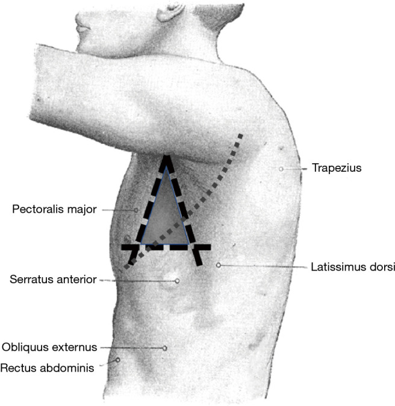
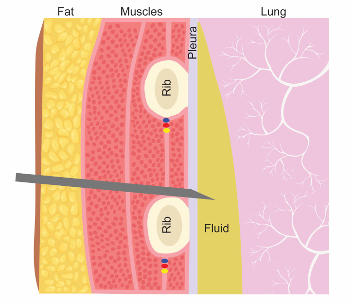
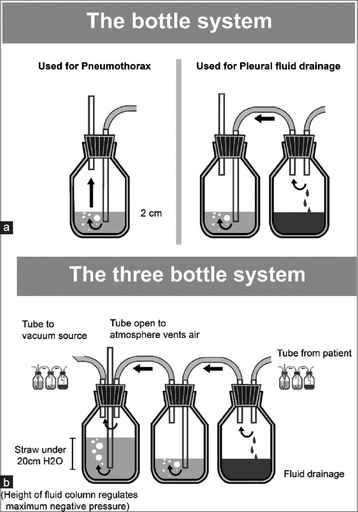

原理與目的
flowchart TD A["胸膜腔有異物<br/>膿・水・血・氣"] A --> B["肺被壓迫萎陷<br/>通氣血流不匹配・低血氧"] A --> C["膿液持續發炎<br/>fibrin 沉積 → loculation → 機化"] A -->|"引流"| D["移除內容物"] D --> E["肺重新擴張<br/>臟層壁層胸膜貼合"] E --> F["消除死腔・切斷發炎循環"] classDef bad fill:#8e0000,stroke:#5f0000,color:#fff,font-weight:bold classDef good fill:#1b5e20,stroke:#0b3d0b,color:#fff,font-weight:bold classDef hub fill:#263238,stroke:#000,color:#fff,font-weight:bold class A hub class B,C bad class E,F good
適應症 Indications
| 適應症 | 判斷閾值／時機 |
|---|---|
| Empyema / complicated parapneumonic effusion | 肉眼膿｜Gram stain/culture 陽性｜pH < 7.20｜glucose < 40 mg/dL｜LDH > 1000 IU/L（任一） |
| Tension Pneumothorax↗ | 臨床診斷即處置——先針刺減壓，再放胸管。不要等 CXR |
| 一般氣胸 | 大量、症狀明顯、或需正壓通氣 |
| Hemothorax↗ | 大量積血、持續出血 |
| 大量 Pleural effusion↗ | 造成呼吸窘迫需緩解症狀 |
| 惡性胸水反覆積聚 | 需 pleurodesis 或長期導管 |
術前準備與評估
| 項目 | 內容 |
|---|---|
| 必查檢驗 | PT/INR、aPTT、血小板（任何侵入性處置前的底線）、CBC |
| 影像／定位 | Chest X-ray↗ 確認側別與量；胸部超音波導引可降低併發症、看清 loculation |
| 同意書與風險說明 | 必須主動說明氣胸、hemothorax，並交代術後監測計畫——病人事後才知道有風險等於沒有知情同意 |
| 停藥 | 抗凝血劑／抗血小板藥依風險評估決定是否停用與停多久 |
| 其他 | 確認插管側別（wrong-site 是重大事故）、局麻藥、監測設備 |
操作概要
不是操作手冊，是「要知道會發生什麼」的程度。
- 病人半坐臥、患側手臂上舉抱頭。定位 safe triangle（腋前線＝胸大肌外緣、腋後線＝闊背肌前緣、下界＝乳頭水平線，約第 4–5 肋間）
- 消毒、鋪單、局部麻醉至壁層胸膜
- 沿肋骨上緣進針／切開——避開肋骨下緣的肋間神經血管束
- 鈍性分離進入胸膜腔，置入胸管（膿胸與血胸用較粗管；氣胸與單純積液可用 pigtail）
- 接水封瓶（water seal），觀察是否有氣泡（air leak）與水柱隨呼吸擺動（tidaling）
- 術後必照 CXR 確認位置與肺是否復張

患側手臂抬高後，以胸大肌外緣為前界、闊背肌前緣為後界、第 5 肋間附近為下界；實際切口依影像與觸診確認落在第 4–5 肋間。Source: Williams & Lerner, “Managing complications of pleural procedures” Figure 2（CC BY-NC-ND 4.0）。
藍／紅／黃點代表肋間神經血管束，藏在每根肋骨下緣；因此針沿「下方肋骨上緣」通過，避開 VAN。若貼著上方肋骨下緣，正好會撞上神經血管束。Source: Fraser et al., “The Sound of Safety: DIVOT” Figure 1（CC BY 4.0）。
三瓶系統由病人端依序進入集液瓶（右）→ 水封瓶（中）→ 抽吸控制瓶（左）；水封提供單向閥，最左瓶水柱高度限制負壓。持續冒泡提示 air leak，水柱隨呼吸上下為 tidaling。Source: Christopher et al., Pleural effusion guidelines, Figure 4（CC BY-NC-SA 4.0）。併發症 Complications
| 併發症 | 何時出現 | 怎麼發現 | 怎麼處理 |
|---|---|---|---|
| Pneumothorax↗ | 術中／術後即刻 | 術後 CXR、突發喘 | 依大小觀察或調整胸管 |
| Hemothorax↗（傷及肋間動脈） | 術中／術後數小時 | 引流液變血性、Hb 下降、血壓下降 | 輸血、外科會診止血 |
| Re-expansion pulmonary edema | 引流後數十分鐘至數小時 | 引流當下劇咳／胸痛，之後喘、低血氧、患側浸潤 | 預防勝於治療：單次 ≤ 1–1.5 L；出現症狀立即夾管 |
| 器官損傷（肝、脾、橫膈） | 術中 | 引流出膽汁／血、劇痛 | 影像確認、外科會診 |
| 感染（管路相關） | 數日後 | 發燒、穿刺處紅腫 | 換管、抗生素 |
| 皮下氣腫 | 術後 | 觸診捻髮感 | 多可自行吸收，需查漏氣原因 |
| 管路阻塞／脫位 | 任何時候 | 引流量突然歸零、水柱不擺動 | CXR 確認、沖洗或重置 |
術後監測
| 要盯的 | 頻率 | 異常閾值 |
|---|---|---|
| 引流量與性狀 | 每班記錄 | 突然大量血性；或量突然歸零（阻塞） |
| Air leak（水封瓶氣泡） | 每班 | 持續不停 → 懷疑支氣管肋膜瘻管 |
| Tidaling（水柱隨呼吸擺動） | 每班 | 消失 → 阻塞或肺已完全復張 |
| Vital signs、SpO₂ | 依病情 | 引流後喘或血氧下降 → 想 re-expansion edema |
| CXR | 術後即刻＋定期 | 肺未復張 → 考慮纖維溶解劑或 VATS |
| 發炎指標、體溫 | 每日 | 未改善 → 引流不足或抗生素涵蓋不當 |
禁忌與陷阱
相關連結
- Empyema — 最主要適應症
- Pleural fluid analysis — 決定要不要引流的依據
- Pneumothorax↗ — 適應症，同時也是併發症
- RUQ pain — 常見的主訴入口之一
- 禁忌選項